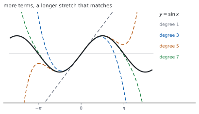
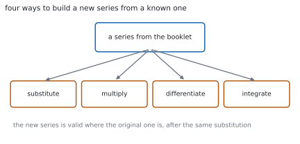

HL 5.19 — Maclaurin series（Maclaurin 級数）
- Maclaurin 級数の式を書き、係数を求められる。
- 公式集にある \(e^{x}\)、\(\ln(1+x)\)、\(\sin x\)、\(\cos x\)、\(\arctan x\) の級数を使える。
- \((1+x)^{p}\)（\(p \in \mathbb{Q}\)）の展開を書ける（HL 1.10b）。
- 置きかえで新しい級数を作れる。
- かけ算で級数を作れる。
- 微分・積分で級数を作れる。
- 微分方程式から級数を作れる。
The idea
1. The Maclaurin series（Maclaurin 級数）
公式集の 5.19 の欄にあります。
Maclaurin series
\[ f(x) = f(0)+x\,f'(0)+\frac{x^{2}}{2!}f''(0)+\cdots \tag{1}\]
\(x = 0\) での値と導関数だけで、関数を多項式に近づけます（第 1 節）。
\(x^{n}\) の係数は \(\dfrac{f^{(n)}(0)}{n!}\) です。分母の階乗を落とさないでください。

2. The five standard series（公式集の \(5\) つ）
シラバスは、こう書いています。
Maclaurin series to obtain expansions for \(e^{x}\), sinx, cosx, arctanx, ln(1 + x), \((1 + x)^{p}\), \(p \in \mathbb{Q}\).
公式集には、次の \(5\) つが印刷されています。
Maclaurin series for special functions
| 関数 | 級数 |
|---|---|
| \(e^{x}\) | \(1+x+\dfrac{x^{2}}{2!}+\cdots\) |
| \(\ln(1+x)\) | \(x-\dfrac{x^{2}}{2}+\dfrac{x^{3}}{3}-\cdots\) |
| \(\sin x\) | \(x-\dfrac{x^{3}}{3!}+\dfrac{x^{5}}{5!}-\cdots\) |
| \(\cos x\) | \(1-\dfrac{x^{2}}{2!}+\dfrac{x^{4}}{4!}-\cdots\) |
| \(\arctan x\) | \(x-\dfrac{x^{3}}{3}+\dfrac{x^{5}}{5}-\cdots\) |
分母に注意してください。 \(\sin\) と \(\cos\) は階乗、\(\ln(1+x)\) と \(\arctan\) はただの整数です。
\(\sin\) と \(\arctan\) は奇数次だけ、\(\cos\) は偶数次だけです。
3. \((1+x)^{p}\)（二項級数）
\(p\) が有理数のときの二項展開です（HL 1.10b）。
\[ (1+x)^{p} = 1+px+\frac{p(p-1)}{2!}x^{2}+\frac{p(p-1)(p-2)}{3!}x^{3}+\cdots \tag{2}\]
\(p\) が正の整数でなければ、項は無限に続きます。使えるのは \(\lvert x \rvert < 1\) のときです。
4. Substitution（置きかえで作る）
Use of simple substitution, products, integration and differentiation to obtain other series.

シラバスの例です。
Example: for substitution: replace \(x\) with \(x^{2}\) to define the Maclaurin series for \(e^{x^{2}}\).
\[ e^{x^{2}} = 1+x^{2}+\frac{x^{4}}{2!}+\cdots \]
もとの \(x\) のところに、まるごと入れます。 \(2x\) を入れるなら \((2x)^{2} = 4x^{2}\) のように、\(2\) 乗も忘れずに。
5. Products（かけ算で作る）
Example: the expansion of \(e^{x}\sin x\).
\(2\) つの級数をかけて、ほしい次数までの項だけを集めます。
\[ e^{x}\sin x = \left(1+x+\frac{x^{2}}{2}+\cdots\right)\left(x-\frac{x^{3}}{6}+\cdots\right) \]
\(x^{3}\) までなら、\(x^{4}\) 以上になる組は捨てます。 どこまで書けばよいかを先に決めると、計算が減ります。
6. Differentiating and integrating（微分と積分で作る）
級数は、項ごとに微分・積分できます。
\[ \frac{1}{1+x^{2}} = 1-x^{2}+x^{4}-\cdots \quad \Longrightarrow \quad \arctan x = x-\frac{x^{3}}{3}+\frac{x^{5}}{5}-\cdots \]
積分したときの定数は、\(x = 0\) を入れて決めます。\(\arctan 0 = 0\) なので \(C = 0\) です。
7. From a differential equation（微分方程式から作る）
Maclaurin series developed from differential equations.
\(\dfrac{\mathrm{d}y}{\mathrm{d}x}\) の式が与えられたら、くり返し微分して \(x = 0\) での値を並べます。
- \(y(0)\) は初期条件から。
- \(y'(0)\) は方程式に \(x = 0\) を入れて。
- 方程式の両辺を微分して \(y''\) の式を作り、\(x = 0\) を入れて。
- 必要な次数まで、くり返す。
変数分離などで解けない式でも、級数なら作れます。 これが、この方法の強みです。
TI-Nspire CX II には taylor( があります。taylor(e^x, x, 3, 0) で、\(x = 0\) のまわりの \(3\) 次までが返ります。
\(4\) 番目の引数が展開の中心です。Maclaurin は中心が \(0\) なので、\(0\) を入れます。
答案には、式を書いてください。 係数を求めた行や、置きかえ・かけ算の行を見せます。
Paper 1 では使えません。 このページの例題と演習は、すべて手で解けるようにしてあります。
Why it works
なぜ \(x = 0\) での導関数だけで決まるのか
多項式 \(a_{0}+a_{1}x+a_{2}x^{2}+\cdots\) に \(x = 0\) を入れると、\(a_{0}\) だけが残ります。
\(1\) 回微分してから \(x = 0\) を入れると \(a_{1}\)、\(2\) 回微分してから入れると \(2a_{2}\) です。一般に
\[ f^{(n)}(0) = n!\,a_{n} \]
なので \(a_{n} = \dfrac{f^{(n)}(0)}{n!}\) です。階乗は、ここから出ています。
式 1 は「\(x = 0\) での値・傾き・曲がり方…をすべて合わせた多項式」だ、と読めます。
なぜ、項を増やすと合う範囲が広がるのか
\(1\) 次の項までなら、\(x = 0\) での値と傾きだけを合わせた接線です。\(2\) 次まで入れると、曲がり方も合います。
合わせる条件が増えるほど、離れたところまで似てきます（図 1）。
ただし、どこまでも合うわけではありません。\(\ln(1+x)\) や \(\arctan x\) は、\(\lvert x \rvert > 1\) では級数が発散します。
なぜ、置きかえてよいのか
\(e^{u} = 1+u+\dfrac{u^{2}}{2!}+\cdots\) は、どの \(u\) でも成り立ちます。
ですから \(u = x^{2}\) と置いてかまいません。\(u\) が \(x\) の式でも、等式は等式のままです。
ただし、範囲も置きかわります。 \(\ln(1+u)\) が使えるのは \(\lvert u \rvert < 1\) なので、\(u = 2x\) なら \(\lvert x \rvert < \dfrac{1}{2}\) です。
なぜ、項ごとに微分・積分してよいのか
級数が収束する範囲の内側では、有限個の多項式と同じように項ごとの微分・積分ができます。
\(\dfrac{1}{1+x^{2}}\) は等比級数 \(1-x^{2}+x^{4}-\cdots\) です（SL 1.8）。公比が \(-x^{2}\) なので、\(\lvert x \rvert < 1\) で収束します。
これを項ごとに積分すると \(\arctan\) の級数になり、表 1 と一致します。公式集の級数どうしが、つながっているわけです。
Worked examples
問題文は英語です。意味が理解できなかったら、問題文の下の「日本語訳」を開いてください。解説は日本語です。
例題も演習も、すべて電卓なしで解けます。 Paper 1 のつもりで解いてください。
例題 1 Find the Maclaurin series for \(e^{2x}\) up to and including the term in \(x^{3}\).
日本語訳
\(e^{2x}\) の Maclaurin 級数を、\(x^{3}\) の項まで求めなさい。
\(e^{u}\) の級数に \(u = 2x\) を入れます（第 4 節）。
\[ e^{u} = 1+u+\frac{u^{2}}{2!}+\frac{u^{3}}{3!}+\cdots \]
\[ e^{2x} = 1+2x+\frac{(2x)^{2}}{2}+\frac{(2x)^{3}}{6}+\cdots = 1+2x+2x^{2}+\frac{4}{3}x^{3}+\cdots \]
検算。 微分してもどします。 級数を微分すると \(2+4x+4x^{2}\) で、もとの級数の \(2\) 倍 ✓ \(\dfrac{\mathrm{d}}{\mathrm{d}x}e^{2x} = 2e^{2x}\) と合います。
検算（\(x = 0\)）。 \(1\) ✓ \(e^{0} = 1\) です。
\[e^{2x} = 1+(2x)+\frac{(2x)^{2}}{2!}+\frac{(2x)^{3}}{3!}+\cdots\]
\[= 1+2x+2x^{2}+\frac{4}{3}x^{3}+\cdots\]
例題 2 Find the Maclaurin series for \(\ln(1+2x)\) up to and including the term in \(x^{3}\).
日本語訳
\(\ln(1+2x)\) の Maclaurin 級数を、\(x^{3}\) の項まで求めなさい。
\(\ln(1+u) = u-\dfrac{u^{2}}{2}+\dfrac{u^{3}}{3}-\cdots\) に \(u = 2x\) を入れます。
\[ \ln(1+2x) = 2x-\frac{(2x)^{2}}{2}+\frac{(2x)^{3}}{3}-\cdots = 2x-2x^{2}+\frac{8}{3}x^{3}-\cdots \]
検算。 微分してもどします。 \(2-4x+8x^{2}\) で、\(\dfrac{2}{1+2x} = 2(1-2x+4x^{2}-\cdots)\) ✓
検算（範囲）。 \(\lvert 2x \rvert < 1\)、つまり \(\lvert x \rvert < \dfrac{1}{2}\) ✓（第 3 節）
\[\ln(1+2x) = (2x)-\frac{(2x)^{2}}{2}+\frac{(2x)^{3}}{3}-\cdots\]
\[= 2x-2x^{2}+\frac{8}{3}x^{3}-\cdots\]
例題 3 Find the Maclaurin series for \(e^{x}\sin x\) up to and including the term in \(x^{3}\).
日本語訳
\(e^{x}\sin x\) の Maclaurin 級数を、\(x^{3}\) の項まで求めなさい。
\(x^{3}\) までほしいので、それぞれ \(x^{3}\) までで十分です（第 5 節）。
\[ e^{x} = 1+x+\frac{x^{2}}{2}+\frac{x^{3}}{6}+\cdots, \qquad \sin x = x-\frac{x^{3}}{6}+\cdots \]
かけ算して、\(x^{3}\) 以下の項だけ集めます。
- \(x\) の項 … \(1 \times x = x\)
- \(x^{2}\) の項 … \(x \times x = x^{2}\)
- \(x^{3}\) の項 … \(\dfrac{x^{2}}{2}\times x = \dfrac{x^{3}}{2}\)、\(1 \times\left(-\dfrac{x^{3}}{6}\right) = -\dfrac{x^{3}}{6}\)
\[ e^{x}\sin x = x+x^{2}+\left(\frac{1}{2}-\frac{1}{6}\right)x^{3}+\cdots = x+x^{2}+\frac{x^{3}}{3}+\cdots \]
検算（定数項）。 \(\sin 0 = 0\) なので、定数項はありません ✓
検算（係数）。 \(\dfrac{1}{2}-\dfrac{1}{6} = \dfrac{3-1}{6} = \dfrac{1}{3}\) ✓
\[e^{x}\sin x = \left(1+x+\frac{x^{2}}{2}+\cdots\right) \left(x-\frac{x^{3}}{6}+\cdots\right)\]
\[= x+x^{2}+\left(\frac{1}{2}-\frac{1}{6}\right)x^{3}+\cdots = x+x^{2}+\frac{x^{3}}{3}+\cdots\]
例題 4 Given that \(\dfrac{\mathrm{d}y}{\mathrm{d}x} = x+y\) and \(y = 1\) when \(x = 0\), find the Maclaurin series for \(y\) up to and including the term in \(x^{3}\).
日本語訳
\(\dfrac{\mathrm{d}y}{\mathrm{d}x} = x+y\)、\(x = 0\) のとき \(y = 1\) とします。\(y\) の Maclaurin 級数を \(x^{3}\) の項まで求めなさい。
\(x = 0\) での値を、順に出します（第 7 節）。
\[ y(0) = 1 \]
方程式に \(x = 0\)、\(y = 1\) を入れます。
\[ y'(0) = 0+1 = 1 \]
方程式の両辺を微分します。
\[ y'' = 1+y' \quad \Longrightarrow \quad y''(0) = 1+1 = 2 \]
もう一度微分します。
\[ y''' = y'' \quad \Longrightarrow \quad y'''(0) = 2 \]
式 1 に入れます。
\[ y = 1+x+\frac{2}{2!}x^{2}+\frac{2}{3!}x^{3}+\cdots = 1+x+x^{2}+\frac{x^{3}}{3}+\cdots \]
検算。 級数を微分します。 \(1+2x+x^{2}\)。いっぽう \(x+y = x+1+x+x^{2} = 1+2x+x^{2}\) ✓
検算（初期条件）。 \(x = 0\) で \(y = 1\) ✓
\[y(0) = 1, \qquad y'(0) = 0+1 = 1\]
\[y'' = 1+y' \ \Rightarrow \ y''(0) = 2, \qquad y''' = y'' \ \Rightarrow \ y'''(0) = 2\]
\[y = 1+x+\frac{2}{2!}x^{2}+\frac{2}{3!}x^{3}+\cdots = 1+x+x^{2}+\frac{x^{3}}{3}+\cdots\]
試験ではこう書く
The Maclaurin series needs the values of \(y\) and its derivatives at \(x = 0\), so these are found one at a time from the differential equation.
The initial condition gives \(y(0) = 1\) directly. Substituting \(x = 0\) and \(y = 1\) into \(\dfrac{\mathrm{d}y}{\mathrm{d}x} = x+y\) gives \(y'(0) = 0+1 = 1\).
Differentiating the whole equation with respect to \(x\), and remembering that \(y\) is a function of \(x\), gives \(y'' = 1+y'\). Substituting \(x = 0\) and the value \(y'(0) = 1\) already found gives \(y''(0) = 1+1 = 2\).
Differentiating once more gives \(y''' = y''\), so \(y'''(0) = 2\).
Substituting into \(y = y(0)+xy'(0)+\dfrac{x^{2}}{2!}y''(0)+\dfrac{x^{3}}{3!}y'''(0)+\cdots\),
\[y = 1+x+\frac{2}{2}x^{2}+\frac{2}{6}x^{3}+\cdots = 1+x+x^{2}+\frac{x^{3}}{3}+\cdots\]
As a check, differentiating this series term by term gives \(1+2x+x^{2}\), while \(x+y = 1+2x+x^{2}\) to the same order, so the series satisfies the equation.
Common errors
\(x^{n}\) の係数は \(\dfrac{f^{(n)}(0)}{n!}\) です（式 1）。
\(f^{(n)}(0)\) だけ書くと、\(n \geq 2\) で値がちがってしまいます。
この \(2\) つはただの整数です（表 1）。
\(\ln(1+x) = x-\dfrac{x^{2}}{2}+\dfrac{x^{3}}{3}-\cdots\) であって、\(\dfrac{x^{2}}{2!}\) ではありません。\(3\) 次の項でちがいが出ます。
\(u = 2x\) なら \(u^{2} = 4x^{2}\) です（第 4 節）。
\(\dfrac{(2x)^{2}}{2} = 2x^{2}\) であって \(x^{2}\) ではありません。かっこを付けて書くと防げます。
\(x^{3}\) までなら、\(x^{4}\) 以上になる組は要りません（第 5 節）。
先にどこまで必要かを決めると、計算がぐっと減ります。
\(y'' = 1+y'\) のように、\(y\) を微分すると \(y'\) が出ます（HL 5.14）。
\(y\) を定数とあつかうと、\(2\) 次以降の係数がすべてまちがいます。
Exercises
各問題に、折りたたみが \(3\) つ付いています。日本語訳、解答例（答案用紙に書くべきこと。英語です）、解説（なぜそうなるか。日本語です）。
まず自分で解いて、次に解答例と見くらべてください。解説は、合わなかったときだけ開けば十分です。
1 Find the Maclaurin series for \(e^{-x}\) up to and including the term in \(x^{3}\).
日本語訳
\(e^{-x}\) の Maclaurin 級数を、\(x^{3}\) の項まで求めなさい。
\[e^{-x} = 1+(-x)+\frac{(-x)^{2}}{2!}+\frac{(-x)^{3}}{3!}+\cdots\]
\[= 1-x+\frac{x^{2}}{2}-\frac{x^{3}}{6}+\cdots\]
\(u = -x\) を入れるだけです。符号が交互になります。
検算（微分）。 \(-1+x-\dfrac{x^{2}}{2}\) で、もとの級数の \(-1\) 倍 ✓
検算（\(e^{x}\) とかける）。 \(\left(1+x+\dfrac{x^{2}}{2}\right)\left(1-x+\dfrac{x^{2}}{2}\right) = 1+0x+0x^{2}+\cdots\) ✓ \(e^{x}e^{-x} = 1\) と合います。
2 Find the Maclaurin series for \(\sin 2x\) up to and including the term in \(x^{3}\).
日本語訳
\(\sin 2x\) の Maclaurin 級数を、\(x^{3}\) の項まで求めなさい。
\[\sin 2x = (2x)-\frac{(2x)^{3}}{3!}+\cdots = 2x-\frac{8x^{3}}{6}+\cdots = 2x-\frac{4}{3}x^{3}+\cdots\]
\((2x)^{3} = 8x^{3}\) です。\(3\) 乗も忘れずに。
\(\sin\) は奇数次だけなので、\(x^{2}\) の項はありません（第 2 節）。
検算（\(x = 0\)）。 \(0\) ✓ \(\sin 0 = 0\) です。
検算（微分）。 \(2-4x^{2}\) で、\(2\cos 2x = 2\left(1-\dfrac{(2x)^{2}}{2}\right) = 2-4x^{2}\) ✓
3 Find the Maclaurin series for \(\cos\left(x^{2}\right)\) up to and including the term in \(x^{4}\).
日本語訳
\(\cos\left(x^{2}\right)\) の Maclaurin 級数を、\(x^{4}\) の項まで求めなさい。
\[\cos u = 1-\frac{u^{2}}{2!}+\cdots, \qquad u = x^{2}\]
\[\cos\left(x^{2}\right) = 1-\frac{x^{4}}{2}+\cdots\]
\(u^{2} = x^{4}\) なので、\(x^{4}\) までなら項は \(2\) つです。次は \(u^{4} = x^{8}\) です。
検算（\(x = 0\)）。 \(1\) ✓ \(\cos 0 = 1\) です。
検算（偶数次）。 出てくるのは \(x^{0}\) と \(x^{4}\) ✓ どちらも偶数次です。
4 Find the Maclaurin series for \(\sqrt{1+x}\) up to and including the term in \(x^{3}\).
日本語訳
\(\sqrt{1+x}\) の Maclaurin 級数を、\(x^{3}\) の項まで求めなさい。
With \(p = \dfrac{1}{2}\) in the binomial series,
\[\sqrt{1+x} = 1+\frac{1}{2}x+\frac{\frac{1}{2}\left(-\frac{1}{2}\right)}{2!}x^{2} +\frac{\frac{1}{2}\left(-\frac{1}{2}\right)\left(-\frac{3}{2}\right)}{3!}x^{3}+\cdots\]
\[= 1+\frac{x}{2}-\frac{x^{2}}{8}+\frac{x^{3}}{16}+\cdots\]
式 2 で \(p = \dfrac{1}{2}\) です。符号が途中で変わるところに気をつけてください。
検算（\(2\) 乗する）。 \(\left(1+\dfrac{x}{2}-\dfrac{x^{2}}{8}\right)^{2} = 1+x+\left(\dfrac{1}{4}-\dfrac{1}{4}\right)x^{2}+\cdots = 1+x\) ✓
検算（範囲）。 \(\lvert x \rvert < 1\) ✓
5 Find the Maclaurin series for \(\ln(1-x)\) up to and including the term in \(x^{3}\).
日本語訳
\(\ln(1-x)\) の Maclaurin 級数を、\(x^{3}\) の項まで求めなさい。
Putting \(u = -x\) in \(\ln(1+u)\):
\[\ln(1-x) = (-x)-\frac{(-x)^{2}}{2}+\frac{(-x)^{3}}{3}-\cdots = -x-\frac{x^{2}}{2}-\frac{x^{3}}{3}-\cdots\]
符号がすべてマイナスになります。\((-x)^{2} = x^{2}\) で、前の \(-\) がそのまま残るからです。
検算（微分）。 \(-1-x-x^{2}\) で、\(\dfrac{-1}{1-x} = -\left(1+x+x^{2}+\cdots\right)\) ✓
検算（\(\ln(1+x)\) と足す）。 \(\ln(1+x)+\ln(1-x) = -x^{2}-\cdots\) で、\(\ln\left(1-x^{2}\right)\) の級数 ✓
6 Write down the Maclaurin series for \(\dfrac{1}{1+x^{2}}\) up to the term in \(x^{4}\), and integrate it to obtain the series for \(\arctan x\) up to the term in \(x^{5}\).
日本語訳
\(\dfrac{1}{1+x^{2}}\) の Maclaurin 級数を \(x^{4}\) の項まで書き、それを積分して \(\arctan x\) の級数を \(x^{5}\) の項まで求めなさい。
\[\frac{1}{1+x^{2}} = 1-x^{2}+x^{4}-\cdots\]
\[\arctan x = \int\left(1-x^{2}+x^{4}-\cdots\right)\mathrm{d}x = x-\frac{x^{3}}{3}+\frac{x^{5}}{5}+C\]
Since \(\arctan 0 = 0\), \(\ C = 0\).
7 Find the Maclaurin series for \(x\cos x\) up to and including the term in \(x^{5}\).
日本語訳
\(x\cos x\) の Maclaurin 級数を、\(x^{5}\) の項まで求めなさい。
\[\cos x = 1-\frac{x^{2}}{2!}+\frac{x^{4}}{4!}-\cdots\]
\[x\cos x = x-\frac{x^{3}}{2}+\frac{x^{5}}{24}-\cdots\]
\(x\) をかけるだけなので、次数が \(1\) ずつ上がります。\(\cos\) を \(x^{4}\) まで書けば十分です。
\(2! = 2\)、\(4! = 24\) です。
検算（奇数次）。 偶数次の級数に \(x\) をかけたので、奇数次だけ ✓
検算（\(x = 0\)）。 \(0\) ✓ \(0 \times \cos 0 = 0\) です。
8 Given that \(\dfrac{\mathrm{d}y}{\mathrm{d}x} = y^{2}\) and \(y = 1\) when \(x = 0\), find the Maclaurin series for \(y\) up to and including the term in \(x^{3}\).
日本語訳
\(\dfrac{\mathrm{d}y}{\mathrm{d}x} = y^{2}\)、\(x = 0\) のとき \(y = 1\) とします。\(y\) の Maclaurin 級数を \(x^{3}\) の項まで求めなさい。
\[y(0) = 1, \qquad y'(0) = 1^{2} = 1\]
\[y'' = 2yy' \ \Rightarrow \ y''(0) = 2(1)(1) = 2\]
\[y''' = 2\left(y'\right)^{2}+2yy'' \ \Rightarrow \ y'''(0) = 2+4 = 6\]
\[y = 1+x+\frac{2}{2!}x^{2}+\frac{6}{3!}x^{3}+\cdots = 1+x+x^{2}+x^{3}+\cdots\]
\(y^{2}\) の微分は積の微分公式で \(2yy'\) です（HL 5.14）。\(y\) が \(x\) の関数だからです。
\(y''\) を微分するときも、\(2yy'\) に積の微分公式を使います。
検算（厳密解）。 変数分離で解くと \(y = \dfrac{1}{1-x}\) ✓ その級数は \(1+x+x^{2}+x^{3}+\cdots\) です。
検算（係数）。 \(\dfrac{6}{3!} = 1\) ✓ 階乗で割るのを忘れていません。
試験ではこう書く
The Maclaurin series requires \(y(0)\), \(y'(0)\), \(y''(0)\) and \(y'''(0)\), which are obtained from the differential equation by repeated differentiation.
The initial condition gives \(y(0) = 1\), and substituting into \(\dfrac{\mathrm{d}y}{\mathrm{d}x} = y^{2}\) gives \(y'(0) = 1^{2} = 1\).
Differentiating the equation with respect to \(x\) requires the chain rule on \(y^{2}\), since \(y\) is a function of \(x\):
\[y'' = 2y\,y', \qquad y''(0) = 2(1)(1) = 2\]
Differentiating again, this time with the product rule on \(2yy'\),
\[y''' = 2\left(y'\right)^{2}+2y\,y'', \qquad y'''(0) = 2(1)^{2}+2(1)(2) = 6\]
Substituting into the Maclaurin series,
\[y = 1+x+\frac{2}{2!}x^{2}+\frac{6}{3!}x^{3}+\cdots = 1+x+x^{2}+x^{3}+\cdots\]
This equation can also be solved exactly by separating the variables, giving \(y = \dfrac{1}{1-x}\), whose expansion is the geometric series \(1+x+x^{2}+x^{3}+\cdots\), confirming the answer.
9 Explain why the Maclaurin series of a function uses only the values of the function and its derivatives at \(x = 0\).
日本語訳
関数の Maclaurin 級数が、\(x = 0\) における関数の値と導関数の値だけを使う理由を説明しなさい。
Suppose the function is written as a power series \(a_{0}+a_{1}x+a_{2}x^{2}+\cdots\).
Substituting \(x = 0\) leaves only \(a_{0}\). Differentiating once and then substituting \(x = 0\) leaves only \(a_{1}\), and in general differentiating \(n\) times leaves \(n!\,a_{n}\).
So \(a_{n} = \dfrac{f^{(n)}(0)}{n!}\): each coefficient is determined by one derivative at \(0\).
\(x = 0\) を入れると、\(1\) つの項だけが残るのが要点です（第 1 節）。
だから、係数を \(1\) つずつ取り出せます。階乗は、\(x^{n}\) を \(n\) 回微分したときに出る \(n!\) です。
検算（\(n = 2\)）。 \(x^{2}\) を \(2\) 回微分すると \(2\) ✓ \(2! = 2\) です。
検算（\(n = 3\)）。 \(x^{3}\) を \(3\) 回微分すると \(6\) ✓ \(3! = 6\) です。
試験ではこう書く
Suppose that a function can be represented near \(x = 0\) by a power series
\[f(x) = a_{0}+a_{1}x+a_{2}x^{2}+a_{3}x^{3}+\cdots\]
Substituting \(x = 0\) makes every term containing \(x\) vanish, leaving \(f(0) = a_{0}\).
Differentiating once gives \(f'(x) = a_{1}+2a_{2}x+3a_{3}x^{2}+\cdots\), and substituting \(x = 0\) again removes every term with a factor \(x\), leaving \(f'(0) = a_{1}\).
Differentiating \(n\) times sends the term \(a_{n}x^{n}\) to the constant \(n!\,a_{n}\), while every earlier term has been differentiated away to zero and every later term still carries a factor of \(x\). Hence \(f^{(n)}(0) = n!\,a_{n}\), that is
\[a_{n} = \frac{f^{(n)}(0)}{n!}\]
Each coefficient is therefore fixed by a single derivative evaluated at the one point \(x = 0\), which is exactly the formula in the booklet. The factorials in the denominators come from differentiating \(x^{n}\) repeatedly.
10 A student writes \(\cos x = 1-\dfrac{x^{2}}{2}+\dfrac{x^{4}}{4}-\cdots\). Identify the error and give the correct series.
日本語訳
ある生徒が \(\cos x = 1-\dfrac{x^{2}}{2}+\dfrac{x^{4}}{4}-\cdots\) と書きました。まちがいを指摘し、正しい級数を書きなさい。
The denominators for \(\cos x\) are factorials, not the exponents themselves.
\[\cos x = 1-\frac{x^{2}}{2!}+\frac{x^{4}}{4!}-\cdots = 1-\frac{x^{2}}{2}+\frac{x^{4}}{24}-\cdots\]
The term in \(x^{2}\) happens to agree, since \(2! = 2\), but the term in \(x^{4}\) does not, since \(4! = 24\).
\(2\) 次の項までは合っています。 \(2! = 2\) だからです。ちがいが出るのは \(4\) 次からです。
整数の分母をもつのは \(\ln(1+x)\) と \(\arctan x\) のほうです（表 1）。取りちがえやすいところです。
検算（微分）。 正しい級数を微分すると \(-x+\dfrac{x^{3}}{6}\) で、\(-\sin x\) ✓
検算（生徒の級数を微分）。 \(-x+x^{3}\) となり、\(-\sin x\) と合いません ✓
試験ではこう書く
The error is in the denominators. For \(\cos x\) the coefficient of \(x^{n}\) is \(\dfrac{f^{(n)}(0)}{n!}\), so the denominators are factorials:
\[\cos x = 1-\frac{x^{2}}{2!}+\frac{x^{4}}{4!}-\frac{x^{6}}{6!}+\cdots = 1-\frac{x^{2}}{2}+\frac{x^{4}}{24}-\cdots\]
The student’s second term is correct only by coincidence, because \(2! = 2\). The third term is wrong: \(4! = 24\), not \(4\).
The series with plain integer denominators belong to \(\ln(1+x) = x-\dfrac{x^{2}}{2}+\dfrac{x^{3}}{3}-\cdots\) and \(\arctan x = x-\dfrac{x^{3}}{3}+\dfrac{x^{5}}{5}-\cdots\), which is probably the source of the confusion.
A quick check catches the error: differentiating the correct series term by term gives \(-x+\dfrac{x^{3}}{6}-\cdots\), which is \(-\sin x\) as required, whereas differentiating the student’s series gives \(-x+x^{3}-\cdots\), which is not.